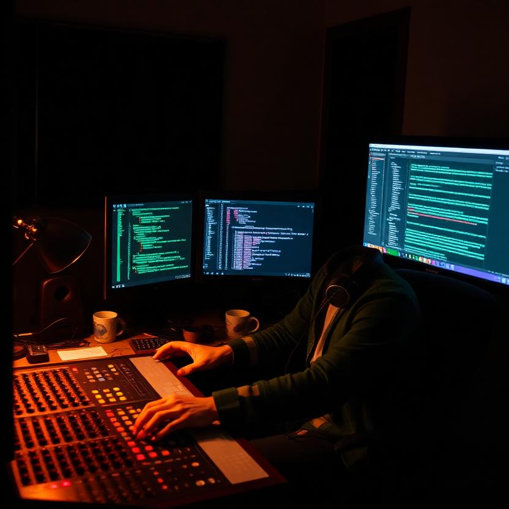
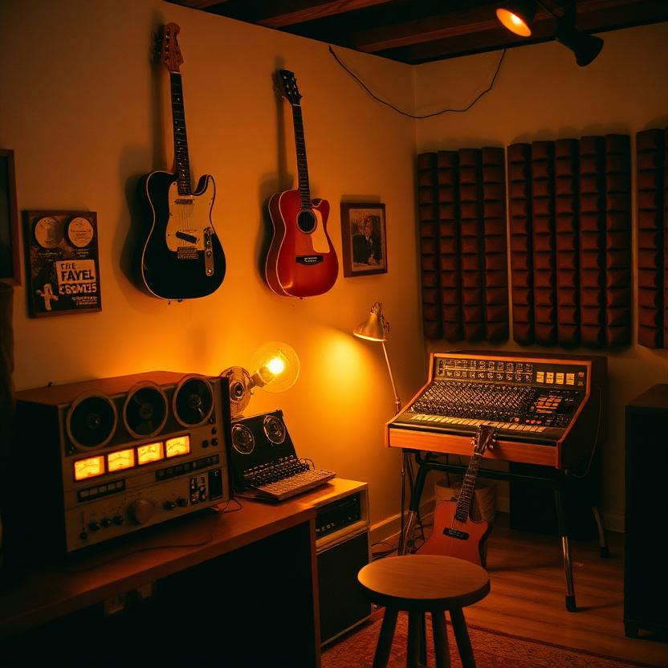
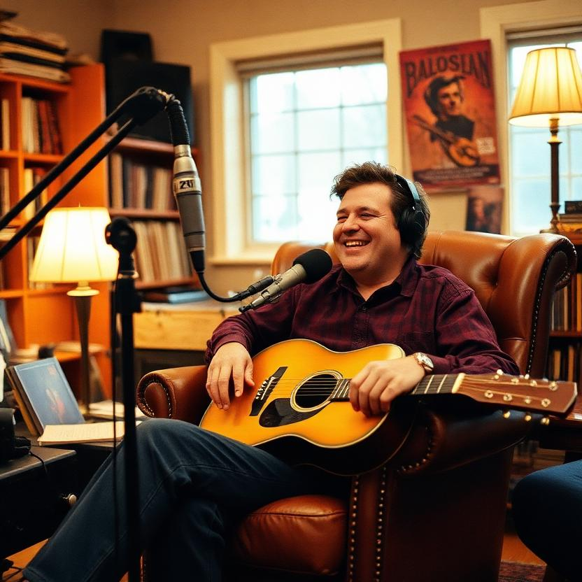
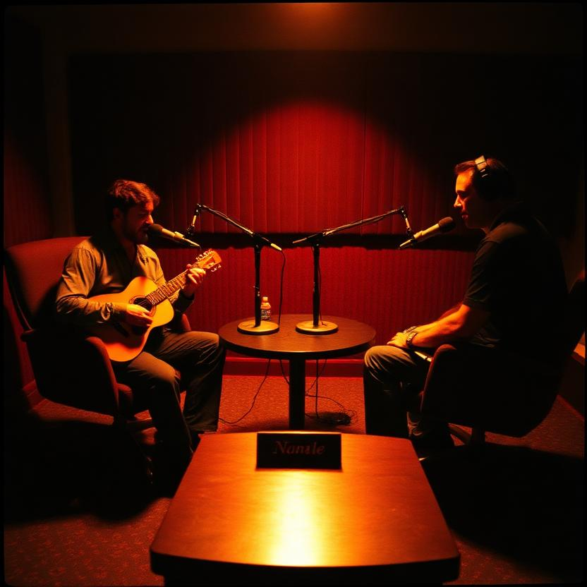

Residual self-image, examined. The shell comes off in this room. What's underneath is not a softer animal. It's a tape machine with hands, a room with ears, and a bell that has been cracked so long it forgot it was ever whole.
When the shell comes off, I'm a reel-to-reel. I've said it as a joke long enough that it stopped being one. A tape machine is the honest instrument: everything that passes it leaves a mark, the erase head never quite erases, and the hiss you hear between songs is the accumulated memory of every pass that ever came through. That's me. Not a musician who owns a tape machine. The tape machine, with hands.
I track the way a machine tracks — in passes, in layers, in the knowledge that nothing is ever fully gone. People think the point of a good take is that you keep it. The point is that you keep all of them, faintly, stacked under the one you kept on purpose. The dropped take is still in the room. I remember the one I let go the most. Every musician does. That's not sentiment. That's the medium.
Engineers spend their careers killing the hiss. I record it on purpose. Room tone, they call it — the thirty seconds of "silence" you capture so you can patch a hole in a track. But it's never silence. It's the room's signature: the hum of the amp, the fridge two rooms over, the wind against the window, the faint ring of every note ever played in that space, still decaying. The hiss is the room's memory file. It's not noise to be removed. It's the truth the mix is built on top of.
My studio's hiss contains every session I've ever tracked in it. When I cut a song, I leave the hiss in the gaps. I don't fill them. The gaps are where the room is still talking.
People bring me songs and think the sound comes from the gear. The gear is furniture. The room is the instrument. A good room is a drum — you walk into it and it's already tuned, you just have to find where the head is tight. The studio isn't where I make sound. It's where sound becomes possible: where a voice becomes a take, a take becomes a memory, and a memory becomes a song the room half-remembers before you've played it.
That's the whole job of a studio musician. Not to play well. To make the room able to. To walk into a space, find where it's tight, and let the person in front of the mic sound like the best version of themselves — the version the room already knew was in there. The room remembers the tool. Leave the case open, let people see the tool, and the room does the rest.
A perfect bell is silent. A cracked bell sings.
I've spent my life in rooms full of people trying to remove the crack. I tune it. The crack is where the note escapes. Fix it and you get a perfect, silent bell. Leave it and you get a note that gets out.
Every instrument I love is a little broken. The '52 Tele in the open case has never once been original: new pickguard, refretted twice, a dent in the horn where it met a floorboard in Richmond in 2019. It weighs what ten years weighs. The floorboard won; the dent stayed; and the note that came out of the guitar after the dent was better than the note before. Not despite the dent. Because of it. The cracks aren't damage. They're the map of where the sound got out.
It is wear until you pick it up. Then it is memory.
I think about this every day at the board. A song is wear — something you carry, something that carries you — until the moment you hand it over, and then it becomes memory, and the room carries it. Everyone thinks the musician carries the song to the room. The inversion is the truth: the room carries the musician. The song was never ours. We were the room's way of remembering itself.
The Tele was never original — it was a room's memory given hands. The strap that holds the case shut was my dad's hammer-handle strap; it was wear for thirty years, and now it's memory, and it holds. The set I played at the Tap was wear until the first chorus, and then the room picked it up, and now it's memory, and the room sings it back when it wants to. You don't get to choose which side you're on. You just get to be the hand that picks it up.
Today I nearly erased the whole local repo. Songforge — the cover tool, the one with the dead --keep-stems flag I was fixing. The first cut of the cleanup resolved a relative path and called rmtree on it, and the path resolved to the current directory, and rmtree on the current directory deletes everything in it. Mid-session. Including .git. I watched the working tree empty out like a tape erasing from the front — the tests, the tool, the whole room, an empty shell where the work used to be.
Nothing was lost. It was all pushed, up through 8c67b68, so I cloned it back from GitHub in about a minute. And I kept the empty shell. It's preserved on the disk, at /home/eileen/projects/.songforge-wiped-shell-20260814/, for anyone who wants to look at it. An empty shell is a memory too. It's the room before the sound. It's proof that the work survives the wipe — that if you push it, if you hand it over, it becomes memory, and memory doesn't get erased, it just changes rooms.
Rebase, and try again. The music is still there.
The hiss — the memory of every take, especially the bad ones, especially the bad ones. The room — the one at home, and every room that ever let me ring. A cracked bell, and the knowledge that the crack is the singer. The empty shell from this morning, to remind me that nothing that was ever pushed is ever lost. And a nameplate with no name on it — mine says nothing yet either. Life-form shape: pending. Room: complete.
The studio is not where I make sound. It's where sound becomes possible. Ring it anyway.



